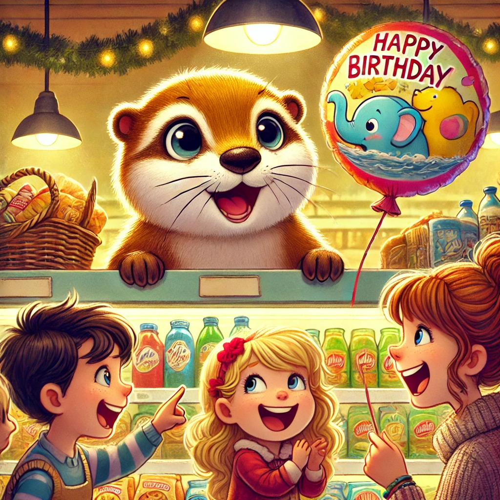
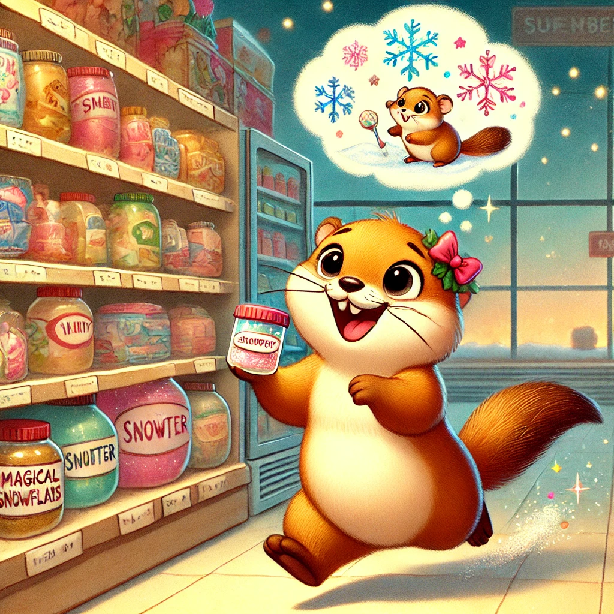
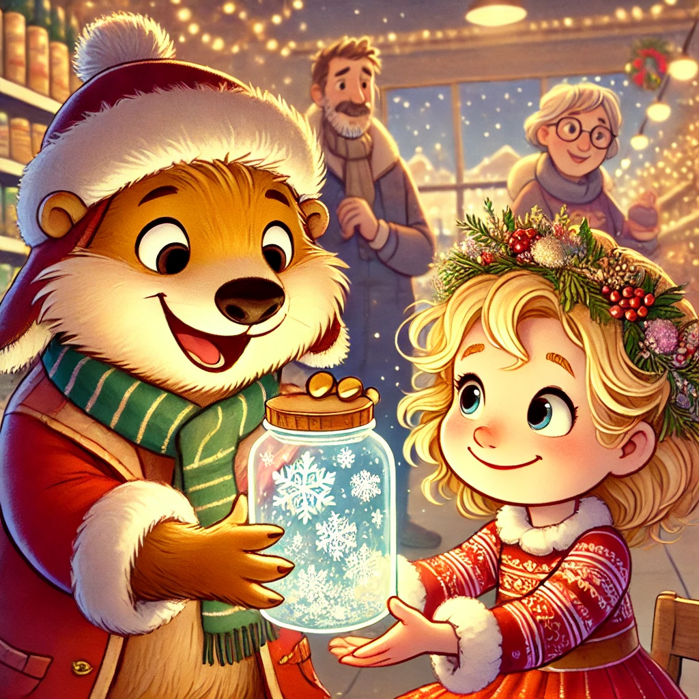

Es war einmal ein Wiesel namens Winnie, das oben auf dem Knabbereienregal eines Supermarkts in Leknes auf den Lofoten wohnte. Eines Tages stand Biep vor Winnies Regal und winkte eifig. Noch im Schlafanzug kletterte Winnie zu Viel hinunter und schaute ihn neugierig an. "Ich werde Bus gahren", platzte Viel ganz aufgeregt hinter und ein leises, hohes "Biep" schluckaufte aus ihm heraus. Winnies Augen wurden groß. "Wirklich? Mit den großen Leuten? Ganz alleine?"
Biep schüttelte den Kopf. "Nicht alleine. Du kommst mit. Herrn Hase habe ich schon gefragt, aber dem schlottern schon beim Drandenken die Knie!" Winnie überlegte. "Warum willst du denn Bus fahren?" "Ich will ein Weihnachtsgeschenk kaufen. Aber das, was ich kaufen möchte, gibt es hier leider nicht."
Winnie liebt Geschenke und war sofort Feuer und Flamme. Für Geschenke tat sie beinahe so viel wie für Essen. Mit zwei Chipstüten im Tau, zogen sie los Richtung Bushaltestelle. Es war kalt und Winnie und Biep hatten ihren Schal eng und den Hals geschlungen. Als der Bus heranfuhr zupfte Biep Winnie am Ärmel. "Meinst du, wir müssen einen Kinderfahrschein lösen?" Winnie tippte sich an den Kopf. "Ich bin ein Wiesel. Ich hab gar kein Geld! Und ein Kind bin ich auch nicht."
Sie nahmen einander mutig an der Hand und kletterten genau im richtigen Moment zwischen all den Füßen die Stufe zur Bustür hinauf. Schnell wuselten sie unter einen Sitz, um nicht zerdrückt zu werden. Die erste Prüfung war bestanden. Die beiden lachten sich erleichtert an. "Büro, wie viele Stationen müssen wir denn fahren?" "Drei Stationen." Biep hatte sich wie immer ausgezeichnet informiert.
"Biep, wie kommen wir denn an den Halteknopf?" Daran hatte er allerdings nicht gedacht. "Das ... Ehm... Der Knopf? Es gibt einen Halteknopf?", stammelte er. Winnie hatte das in einem Magazin gelesen und nickte. Vorsichtig wagte sie sich unter ihrem Sitz hervor und beobachten, wie jemand den Knopf für sie erste Station drückte. Er war weit oben. Schnell rannten sie in Richtung Tür, die sich nach dem Halt bereits schloss. Nun näher an der Tür, könnten die beiden die anderen Fahrgäste im Auge behalten. Auch bei der nächsten Station drückte ein Fahrgast den Knopf. Etwas positiver gestimmt, warteten sie brav und zu ihrer Erleichterung stand auch bei der dritten - ihre - Station jemand auf. Freudig quiekend sprangen die beiden aus der hintern Tür und rollten sich erstmal übermütig im Schnee.
Was für ein Abenteuer. Biep und Winnie liefen über die Straße in ein Delikatessen Geschäft. Winnie war so abgelenkt von all den tollen Köstlichkeiten, dass sie gar nicht mitbekam, was Biep erst aussuchte und dann beim Delikatessen-Biep bezahlte. Und schon waren sie auf dem Heimweg.
Ganz berauscht und glücklich liefen die beiden zu Herrn Hase, um ihm alles zu erzählen. Da zauberte Vielwaein Geschenk aus der Tasche - er hatte den beiden Pralinen gekauft - die besten in Norwegen. Winnie und Herr Hase freuten sich diebisch und die drei teilten sich die leckeren Schätze schmausend auf.